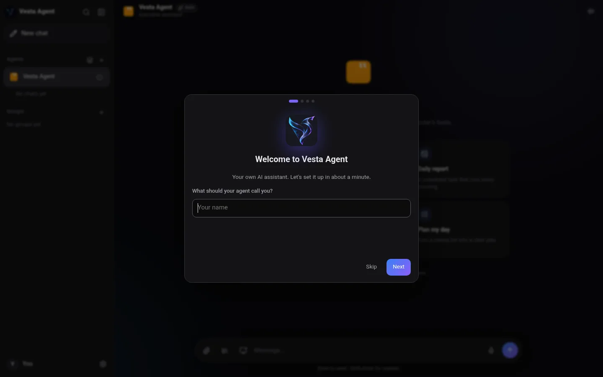
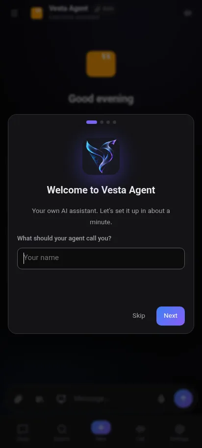

تماس صوتی
طبیعی حرف بزن، جواب صوتی بشنو و وسط تماس صفحه را به اشتراک بگذار.
ایجنت هوش مصنوعی شخصی خودت که حرف میزند، صفحه را میبیند، گوشی را کنترل میکند و برایت کار انجام میدهد. همهچیز روی دستگاه خودت میماند.
دانلود براییک برنامه، ایجنتهای قدرتمند، بدون هیچ سرور ما.
طبیعی حرف بزن، جواب صوتی بشنو و وسط تماس صفحه را به اشتراک بگذار.
با اجازهی تو صفحه را میبیند و مشکل را توضیح میدهد یا درست میکند.
ایجنت روی اندروید لمس میکند، تایپ میکند و جابهجا میشود، حتی بدون کامپیوتر.
چند ایجنت متخصص را در یک گروه بگذار تا کار را تقسیم کنند.
حافظهی هوشمندی که فقط روی دستگاه خودت است. هر وقت خواستی ببین، اصلاح کن یا پاک کن.
وقتی یک کلید تمام شد، کار با کلید بعدی ادامه پیدا میکند.
ربات خودت یا حساب شخصیات را وصل کن و پیام زمانبندیشده بفرست.
پروکسی واقعی HTTP و SOCKS5 برای هر سرویس، با آموزش قدمبهقدم.
با Ollama کاملاً روی کامپیوتر خودت اجرا میشود و چیزی بیرون نمیرود.
بدون حساب کاربری و دیتابیس آنلاین. کلیدها رمزدار روی دستگاه تو ذخیره میشوند.
همان رابط تمیز روی کامپیوتر و گوشی.


رایگان. سیستم خودت را انتخاب کن. v1.4.0
نصبکنندهی ۶۴ بیتی.
نسخهی مخصوص سیستمهای قدیمی.
فایل APK برای گوشی و تبلت.
اوبونتو، دبیان، مینت.
همهی توزیعها.
بله. برنامه رایگان است. از کلید هوش مصنوعی خودت استفاده میکنی، مثلاً کلید رایگان Gemini یا OpenRouter، یا با Ollama آفلاین اجرا میکنی.
فقط روی دستگاه خودت: چتها، حافظه، ایجنتها، تنظیمات و کلیدهای رمزدار. هیچ سرور یا دیتابیس آنلاینی وجود ندارد.
بله. در تنظیمات یک پروکسی اضافه کن (مثلاً پورت محلی v2rayN یا NekoBox) و انتخاب کن کدام سرویسها از آن استفاده کنند. آموزش قدمبهقدم داخل برنامه هست.
Gemini، OpenRouter، سرویسهای سازگار با OpenAI و مدلهای محلی با Ollama.
بله. موقع باز شدن بیصدا چک میکند و فقط وقتی نسخهی جدید باشد پنجره نشان میدهد.
نصبکننده هنوز امضای دیجیتال پولی ندارد. More info و بعد Run anyway را بزن.
Vesta Agent هیچ سروری ندارد. همهچیز روی دستگاه خودت ذخیره میشود و رمز، کلید و اطلاعات کارت هرگز در حافظه ذخیره نمیشوند. تنها چیزی که بیرون میرود پیامی است که به سرویس هوش مصنوعیِ کلیدت فرستاده میشود، و با Ollama هیچچیز بیرون نمیرود. وقتی میکروفون یا اشتراک صفحه فعال است، همیشه یک نشانگر دیده میشود.